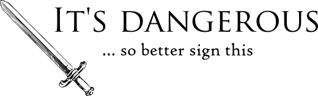

itsdangerous¶
가끔씩 신뢰할 수 없는 환경으로 어떤 데이터를 보내고 싶을 때가 있다. 안전하게 보내려면 어떻게 해야 할까? 방법은 바로 서명이다. 당신만 알고 있는 어떤 키를 두고, 데이터를 암호학적으로 서명해서 다른 누군가에게 넘긴다. 그럼 그 데이터를 돌려받았을 때 누가 데이터를 조작했는지 여부를 쉽게 확인할 수 있다.
수신자는 컨텐츠를 해독하고 그 안에 뭐가 있는지 볼 수 있지만 당신의 비밀키를 가지고 있지 않는 한 컨텐츠를 변경할 수는 없다. 그러니 당신은 키를 안전하고 복잡하게 유지하기만 하면 된다.
내부적으로 itsdangerous는 서명에 기본적으로 HMAC과 SHA-512를 쓴다. 처음 구현은 장고의 서명 모듈에서 영감을 얻었다. JSON 웹 서명(JWS)도 지원한다. BSD 라이선스에 따라 쓸 수 있다.
사용례¶
- 사용자 ID를 직렬화하고 서명해서 URL에 넣어 이메일로 보내서 뉴스레터 구독을 해지할 수 있게 하기. 이렇게 하면 일회용 토큰을 생성해서 데이터베이스에 저장해 둘 필요가 없다. 계정이나 비슷한 뭔가에 대한 활성화 링크 같은 것도 마찬가지다.
- 서명된 객체를 쿠키나 기타 신뢰할 수 없는 곳에 저장할 수 있다. 이는 서버에 세션을 저장할 필요가 없다는 뜻이고 그러면 데이터베이스 질의 횟수가 줄어든다.
- 서명된 정보가 안전하게 서버와 클라이언트 사이를 오갈 수 있다. 따라서 서버 측 상태 정보를 클라이언트에게 보냈다가 돌려받는 데 유용하다.